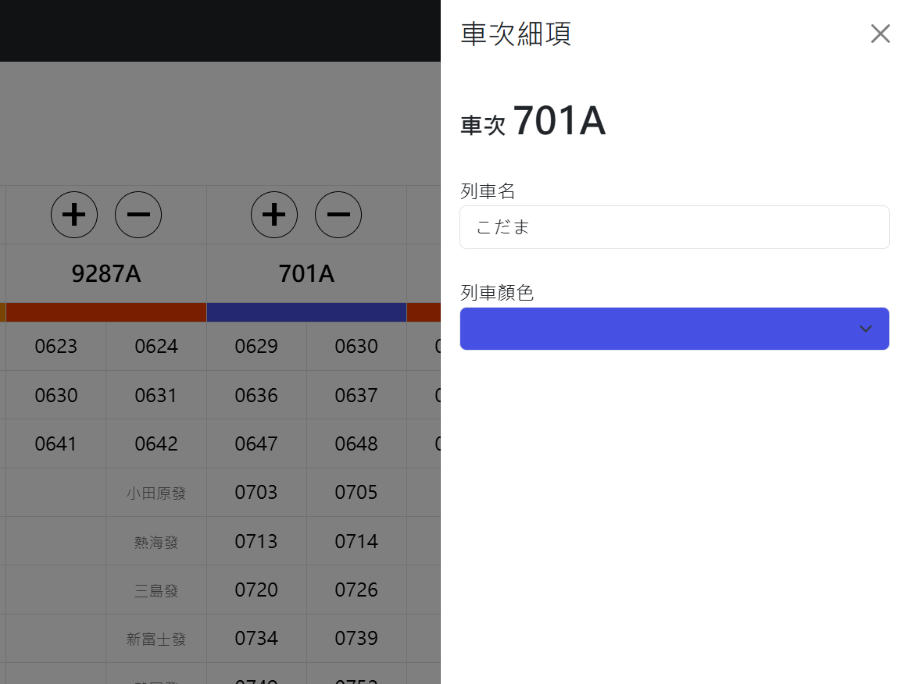

操作細節
時刻表
網站會根據路線資料的車站，產生對應的時刻表。時刻表分成兩頁：
- 時刻表(順行)：車站順序和路線資料相同。
- 時刻表(逆行)：車站順序和路線資料相反。
每一班車佔兩個直行，由左到右排列。
加入/刪除列車
最上方有兩個圓形按鈕：
- ＋：在這班車的右邊加入一班新的列車。
- －：刪除這班車和它的所有時刻。第一班車不能刪除。
車次
在按鈕下方的格子輸入車次，例如 2721C。車次會標示在運行圖的列車線旁邊（可以在基本設定中關閉）。
列車名與線條顏色
車次下方有一條色條，顯示這班車目前的線條顏色。點擊色條，右側會打開「車次細項」，可以設定：
-
隱藏：車次右邊的眼睛。按一下隱藏這班車，再按一下恢復，見隱藏列車。
-
列車名：例如 普通、自強。
-
列車顏色：決定列車在圖上的顏色，共有 10 種可選。沒有選擇時使用顏色 1。10 種顏色可以在基本設定中更改，詳情請見此頁。
-
此列車的線條：這班車自己的線寬與線型（實線、虛線、點線），優先於基本設定中的列車線設定；留白為依設定。
-
始發、終點：從分岐駛入、駛出這條路線的列車（跨線列車）使用，見下節。

始發與終點
跨線列車從分岐駛入時，時刻表上通常沒有它通過分岐站的時刻（例如分岐站是信號場，或列車不停分岐站）。在「車次細項」中設定始發，網站就會推算這個時刻：
- 始發：左邊的選單選擇分岐上的車站，右邊填入列車從這一站發車的時刻（灰色提示字為「XX發」）。
- 終點：從分岐駛出的列車，選擇分岐上的車站，填入列車到達這一站的時刻（「XX到」）。
選單只會列出分岐站在這班車時刻表上的第一個停靠站以前（終點：最後一個停靠站以後）的分岐車站。分岐請先在「路線資料 > 線路拓樸」設定，詳情請見此頁。
注意: 始發不一定要填該列車真正的始發站。填離分岐站最近、非路線的第一個停車站，誤差更小。
在本路線一站都不停的列車（例如直達車從分岐駛入、不停任何車站又從另一個分岐駛出）：時刻表全部留白，始發與終點都設定即可。
隱藏列車
暫時不行駛的列車可以隱藏，不必刪除。隱藏的列車：
- 在時刻表中整班車變成灰底，色條也變成灰色 (原本的顏色會保留，恢復顯示後還原)。
- 不會畫進輸出圖片與印刷檔案，也不會匯出到疊圖與 OuDia 檔案。
- 不參與還原通過時間，計算時當作這班車不存在。
時刻表上方的 不顯示隱藏的列車 開啟時，隱藏的列車不會出現在時刻表中 (順行、逆行兩頁一起切換)。要恢復隱藏的列車，請先關閉這個開關，再點擊它的色條。
隱藏的狀態會存進 JSON 檔案 (CSV 不會)。
時刻
每班車都有左右兩格：左格為到站時刻（選填），右格為發車時刻。右格的灰色提示字會告訴您這是哪個車站。
- 沒有停靠或通過時刻不詳的車站，請留白。 圖上會直接把前後兩站連起來。
- 已知通過時刻的車站，請把到站和發車都填入通過時刻（相當於停車 0 秒）。
- 終點站請在發車時刻（右格）填入抵達時刻。只填左格的話，最後一段線不會畫出來。
- 到站時刻留白的話，輸出圖片時會用「發車時刻減去預設停站時間」畫圖，時刻表中仍保持空白。預設停站時間在「基本設定 > 繪圖設定」調整。留白的到站時刻在還原通過時間時會被推算。
輸入的時刻格式不正確時，格子會變成紅底，而且不會被採用。請修正成正確的格式。
時刻輸入細則
- 時刻的輸入舉例如下：
- 早上 9:35 可接受的輸入為 0935 或 935
- 下午 1:28 可接受的輸入為 1328
- 若時刻帶秒數，例如下午 1:28:30，可直接輸入 132830。
- 小時前面的 0 可省略，分及秒則不可。例如早上 9:05 可寫成 905 或 0905，但不可寫成 095 或 95。
- 00 秒可寫可不寫：例如 21:09:00 可寫成 2109 或 210900。
- 不支援 28、30 小時制，跨夜的班次直接寫時刻即可（例如凌晨 0:15 寫成 0015）。
輸入完成後，網站會自動把時刻整理成 4 位數，例如輸入 935 會變成 0935。
釘選的時刻
疊圖疊加進來的時刻會被釘選，時刻表中以底線標示。釘選的時刻在還原通過時間時不會被移動，包括「到站時刻不準確」、「時刻精度不足」、「通過時間微調」都不會改動它們。
有釘選的時刻時，「車次細項」會顯示這班車有幾個，按解除釘選後就和一般的時刻一樣。
匯入、匯出
班次很多時，建議用 Excel 整理好再匯入，格式請見時刻表資料檔案格式(csv)，操作方式請見如何匯入、匯出。